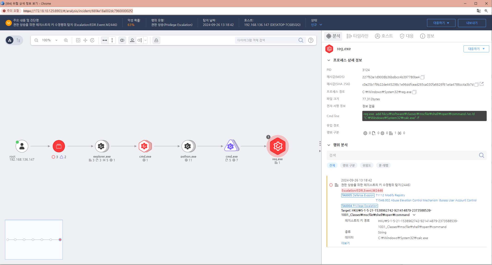

T1548.002.01 bypass uac, 권한 상승 매커니즘 우회
D3FEND
MITRE ATT&CK 액션을 기준으로 대응 방안을 작성
Detection
(Action = Registry-SetValue) AND
(RegKeyName = "HKCR" OR "HKCU" OR "HKU") AND
(RegKeyName = "mscfile\shell\open\command" OR "ms-settings\shell\open\command") AND
(RegValueData !=(contains not) "mmc.exe")
Detection(EDR)

Response
해당 행위를 수행한 프로세스를 종료합니다.
공격자가 수정한 레지스트리 키를 원복합니다.
공격자에 의해 PC가 제어되었을 가능성이 있으므로 호스트 네트워크를 격리합니다.
공격자 C&C 서버로 추정되는 주소를 차단합니다.
Mitigations
- UAC 설정 강화
- UAC를 가장 높은 수준으로 설정합니다.
- 기본값보다 높은 경고 수준으로 설정하면, 관리자 권한을 요구하는 작업이 발생할 때마다 강제적으로 경고가 표시되고, 관리자 자격 증명을 요구하도록 할 수 있습니다.
- UAC 설정을 "항상 알림"으로 변경하여 모든 권한 상승 시 사용자에게 경고가 표시되도록 설정합니다.
제어판 → 사용자 계정 → 사용자 계정 컨트롤 설정 변경에서 슬라이더를 가장 높은 수준으로 설정합니다.
응용 프로그램 호환성 맵퍼(Application Compatibility Shims) 차단
- 공격자는 응용 프로그램 호환성 기능을 악용하여 UAC를 우회할 수 있습니다.
- 이를 방지하기 위해 시스템에서 응용 프로그램 호환성 맵퍼(Shim Database, SDB)에 대한 무단 접근을 제한하거나 이를 비활성화할 수 있습니다.
AppLocker 또는 WDAC(Windows Defender Application Control) 사용
- Microsoft의 AppLocker 또는 Windows Defender Application Control(WDAC)를 사용하여, 신뢰할 수 없는 애플리케이션이나 UAC 우회에 사용될 수 있는 파일 실행을 제한합니다.
- 이러한 도구들은 관리자가 신뢰하는 애플리케이션만 실행되도록 정책을 설정할 수 있어, 악성 스크립트나 응용 프로그램이 UAC를 우회하는 것을 차단할 수 있습니다.
관리자 권한 최소화
- 모든 사용자에게 관리자 권한을 부여하지 않고, 최소 권한 원칙(Least Privilege)을 적용합니다.
- 특히 일반 사용자에게는 표준 사용자 계정을 사용하게 하여, 권한 상승 공격의 표적이 되지 않도록 합니다.
- 관리자 계정에 대해서는 중요한 작업을 할 때만 권한을 사용하도록 정책을 마련하고, 일상적인 작업은 표준 사용자 계정으로 수행하게 합니다.
레지스트리 및 파일 시스템 모니터링
- UAC 우회 공격은 종종 레지스트리 설정이나 시스템 파일을 조작하여 실행됩니다.
- 중요한 레지스트리 키와 시스템 파일에 대한 모니터링을 통해 UAC 우회 시도가 있는지 감지하고 대응합니다.
- 예를 들어, HKEYLOCALMACHINE\SOFTWARE\Microsoft\Windows\CurrentVersion\Policies\System에서 UAC 설정을 조작하려는 시도를 감지할 수 있습니다.
안티멀웨어 솔루션 사용
- 최신 안티멀웨어 및 엔드포인트 보호 솔루션을 사용하여, 알려진 UAC 우회 기법과 악성코드를 탐지하고 차단합니다.
- 특히, 알려진 UAC 우회 도구나 기술에 대한 시그니처 기반 탐지 기능을 활용할 수 있습니다.
UAC 우회 시도에 대한 로깅 활성화
- Windows에서 UAC 우회 시도를 감지하기 위한 로깅 기능을 활성화합니다.
- 이벤트 뷰어(Event Viewer)를 통해 권한 상승 시도와 관련된 이벤트를 기록하고, 비정상적인 활동을 탐지합니다.
- 예를 들어, Microsoft-Windows-Security-Auditing 로그를 통해 관리자 권한 획득 시도를 추적할 수 있습니다.
Affected Techniques
Action 실행시 함꼐 영향을 받는 다른 Techniqes
| D3FEND |
| D3-ISL Executable Allowlisting |
| D3-ISL Executable Denylisting |
| D3-FIM File Integrity Monitoring |
| D3-FIM Service Binary Verification |